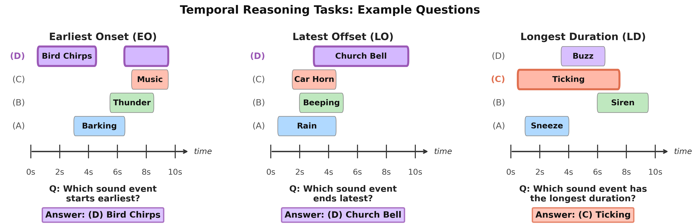
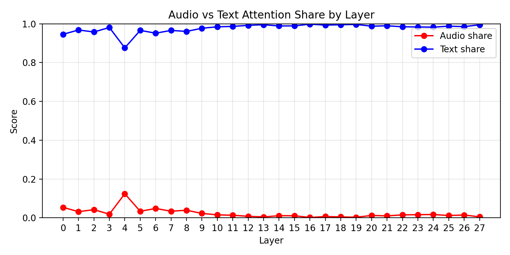
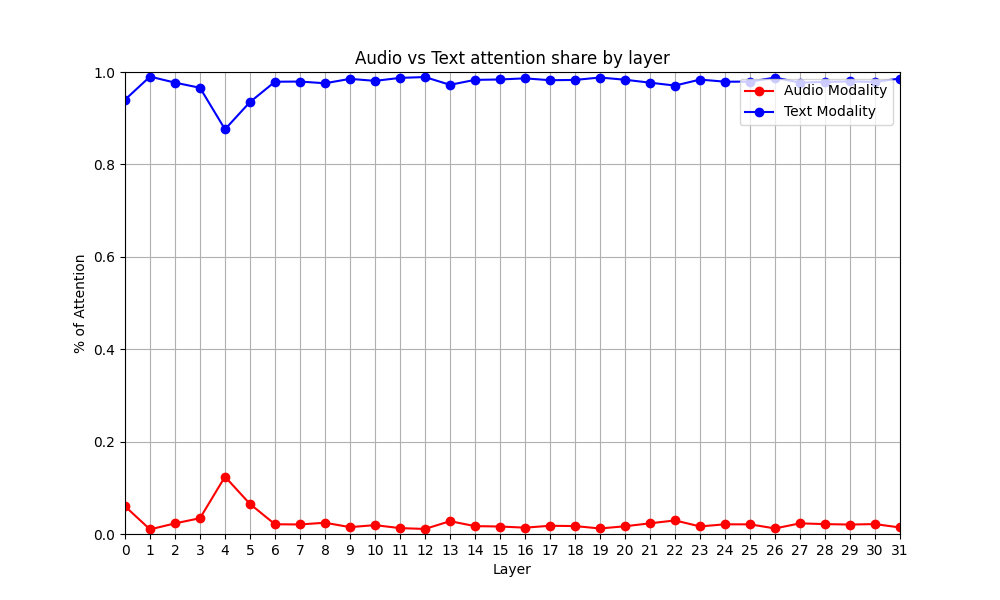
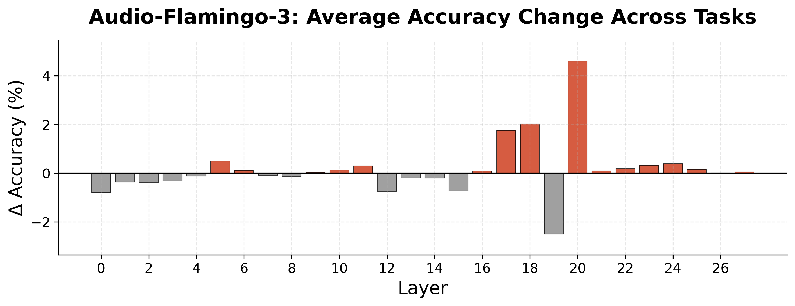
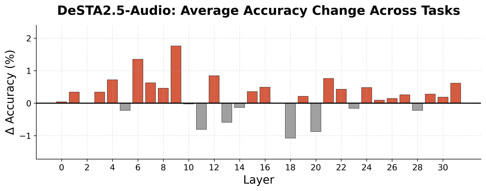

Motivation
Large Audio Language Models (LALMs) — Qwen2-Audio, Kimi-Audio, Audio-Flamingo, and others — have shown impressive performance across a wide range of audio understanding tasks. But there is a specific capability these models consistently fall short on: temporal reasoning. Understanding when a sound starts, when it ends, and how long it lasts is fundamental to human auditory perception, yet it remains a persistent blind spot for current systems.
Prior benchmarks have documented these gaps, but largely through aggregate scores. What they don’t answer is why models fail at temporal reasoning. Is it a modality imbalance problem — models paying too little attention to audio? Is it the audio encoder producing weak representations? Is it something about how attention is distributed within the audio signal itself?
In this work, we introduce a targeted benchmark for mechanistic diagnosis of temporal reasoning failures, and go beyond behavioral observation to perform the first causal attention interventions for temporal reasoning in LALMs. Our central finding: the problem is not simply that models don’t pay enough attention to audio. It’s that they don’t distribute that attention correctly across audio tokens — and fixing the distribution, not just the quantity, is what actually helps.
Benchmark
Existing temporal reasoning benchmarks test many skills at once, making it hard to isolate specific failure modes. Our goal was a dataset narrow enough to enable precise mechanistic analysis. We built a benchmark of 1,657 multiple-choice questions derived from TACOS, a corpus of real-world audio clips with precise onset and offset annotations per event. The full benchmark is available on Hugging Face.
Three Tasks
We designed three foundational tasks, each targeting a different aspect of temporal boundary reasoning:
- Earliest Onset (EO): identify the sound event with the earliest start time among four options (528 questions)
- Latest Offset (LO): identify the sound event with the latest end time among four options (499 questions)
- Longest Duration (LD): identify the sound event with the longest duration among four options (630 questions)
These are prerequisites for any higher-order temporal reasoning. A model that can’t reliably answer “which event started first?” is unlikely to answer more complex relational questions about time.

Real-world audio makes this genuinely hard: sound events may overlap, occur intermittently, or repeat within the same clip. The EO and LO tasks require the correct event to be separated from all others by at least one second; for LD, the correct event must be at least one second longer than all alternatives. Distractor options are drawn from other events in the same clip where available, and from different sound categories when not.
Audio Is Required
A benchmark that can be solved from text alone isn’t testing audio understanding. We verified audio contribution via silence ablation: replacing the audio input with silence while keeping everything else constant. All four models we evaluated dropped to near-chance performance (25%), confirming that the questions cannot be answered from textual priors alone.
| Model | EO (%) | LO (%) | LD (%) |
|---|---|---|---|
| Qwen2-Audio-7B-Instruct | 30.9 | 28.1 | 32.5 |
| Kimi-Audio-7B-Instruct | 22.0 | 24.1 | 25.9 |
| Audio-Flamingo-3 | 25.6 | 20.6 | 28.9 |
| DeSTA2.5-Audio-Llama-3.1-8B | 24.4 | 25.1 | 22.7 |
| Random baseline | 25.0 | 25.0 | 25.0 |
Behavioral Analysis
We evaluate four state-of-the-art open-source LALMs across three input conditions designed to isolate modality contributions:
- AQA (Audio-only): audio + question, no caption
- CQA (Caption-only): weak text caption + question, no audio
- ACQA (Audio + Caption): both audio and caption + question
The results are striking. For most models and tasks, CQA outperforms AQA — the caption alone beats the audio alone. Worse, ACQA provides minimal benefit over CQA in most cases, sometimes hurting. Models with strong overall benchmark scores (Audio-Flamingo-3 achieves 72.4% on MMAU; Kimi-Audio achieves 64.4%) underperform substantially on our temporal tasks, revealing that general audio competence does not translate to reliable temporal reasoning.
| Model | EO: AQA / CQA / ACQA | LO: AQA / CQA / ACQA | LD: AQA / CQA / ACQA |
|---|---|---|---|
| Qwen2-Audio | 30.9 / 63.6 / 63.6 | 28.1 / 46.5 / 46.5 | 32.5 / 58.9 / 58.9 |
| Kimi-Audio | 58.0 / 61.4 / 68.8 | 60.3 / 56.1 / 62.7 | 59.4 / 55.4 / 67.3 |
| Audio-Flamingo-3 | 60.4 / 71.6 / 67.2 | 56.7 / 62.3 / 63.3 | 58.1 / 66.7 / 66.4 |
| DeSTA2.5-Audio | 50.4 / 68.9 / 62.7 | 51.3 / 59.3 / 59.1 | 54.9 / 66.0 / 66.8 |
Layer-wise attention analysis confirms this picture. Plotting the proportion of attention allocated to audio versus text tokens from the final input token at each layer, we see text-dominant attention patterns across most layers for all models — consistent with prior observations of modality imbalance.


But this analysis is correlational. We can’t tell from attention patterns alone whether fixing the imbalance would fix the accuracy. That requires causal intervention.
Mechanistic Analysis
For mechanistic analysis we focus on Audio-Flamingo-3 and DeSTA2.5-Audio-Llama-3.1-8B — the only state-of-the-art LALMs with fully open-source weights, training code, and training data, making reproducible causal analysis possible. We compare two training-free attention interventions.
Attention Upweighting vs. Scaling
Attention Upweighting increases the total attention mass on audio tokens by adding a bias to pre-softmax logits for all audio token positions. If the modality imbalance hypothesis is correct — that models simply don’t pay enough attention to audio — then boosting audio attention should help.
Attention Scaling instead redistributes attention across audio tokens by multiplicatively scaling their logits. With α > 1, this sharpens the distribution (concentrating attention on already-attended audio tokens). With α < 1, this smooths it (spreading attention more evenly). The total amount of attention on audio can go either direction, but crucially, how it lands across individual tokens changes.
We measure fix rate: the percentage of initially incorrect predictions that are corrected after intervention, evaluated on incorrectly predicted samples. The verdict is clear across both models:
Scaling outperforms upweighting. For Audio-Flamingo-3, attention scaling with α = 2.0 (sharpening) achieves a 20.5% average fix rate versus 15.8% for the best upweighting configuration. For DeSTA-2.5-Audio, scaling with α = 0.2 (smoothing) achieves 20.1% versus 10.1% for upweighting. The optimal direction differs by model: Audio-Flamingo-3 benefits from sharpening (attention that is correctly directed but imprecise), while DeSTA-2.5-Audio benefits from smoothing (attention that is misaligned and needs redistribution).
This is the paper’s central finding: modality imbalance alone cannot explain temporal reasoning failures. How attention is distributed across audio tokens matters more than how much total attention audio receives.
Keyword Tokens
We also vary which query positions we intervene from:
- Last: the final prompt token only (following prior work on vision-language models)
- Keyword: task-relevant keyword tokens only — “earliest”, “latest”, “longest”
- Kwd+Last: both keyword and final prompt tokens combined
Combining both yields the highest fix rates for both models. Keyword-only interventions underperform final-token-only, but the two sources provide complementary signal — targeting the tokens that semantically anchor what the model is being asked, alongside the final query position, is strictly better than either alone.
Layer-Targeted Intervention
The fix rate experiments tell us attention redistribution can correct errors. The next question is whether this can be a practical inference-time strategy. We first test applying the best scaling intervention uniformly across all layers: this consistently degrades performance, hurting correctly-predicted examples more than it helps incorrectly-predicted ones.
We then apply scaling at a single layer and sweep all layers. Audio-Flamingo-3 shows a clear localized peak at Layer 20 under sharpening (α = 2.0). DeSTA-2.5-Audio shows peak improvement at Layer 9 under smoothing (α = 0.2).


Averaging across both models, layer-targeted scaling improves temporal reasoning accuracy by 3.2% (from 55.9% to 59.1%) — with no additional training data, fine-tuning, or architectural modifications.
The gains are modest but demonstrate that inference-time attention redistribution is a viable direction. They also reinforce the diagnostic finding: there are specific layers where temporal reasoning bottlenecks, and targeted intervention at those layers is what moves the needle.
Takeaways
-
Temporal reasoning is a persistent gap even for high-performing LALMs. Models like Audio-Flamingo-3 that score above 70% on MMAU fail noticeably on simple foundational tasks — identifying which of four events started earliest, ended latest, or lasted longest.
-
Text dominates audio even when audio is the only informative signal. Across most models and tasks, CQA (text only) outperforms AQA (audio only), and adding audio to text rarely helps. This holds even though our dataset is carefully validated to require audio contribution.
-
The modality imbalance hypothesis is incomplete. Simply boosting the total amount of attention audio receives (upweighting) is less effective than redistributing it (scaling). The problem is not just that models look at audio less — it’s that they don’t look at the right parts of audio.
-
Keyword tokens carry diagnostic leverage. Intervening from task-relevant keyword tokens (“earliest”, “latest”, “longest”) provides complementary benefit alongside the final prompt position. The model’s internal processing of the query term affects how it reads audio.
-
Training-free inference-time interventions can help. Layer-targeted attention scaling at a single identified bottleneck layer yields a 3.2% accuracy improvement with no training. The intervention is architecture-dependent, but the pattern — a localized layer where redistribution matters most — holds for both models.